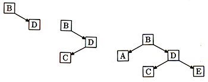

In this article we'll see how they work. First, we'll review how ordinary binary trees store data, and we'll see the potential disadvantages of that. Then we'll look over the B-Tree algorithm in the abstract, and see how it corrects the flaws of binary trees. Then we'll look at the code of a Perl module that implements the B-Tree algorithms and see how B-Trees can be implemented in Perl.
Both binary trees and B-Trees are structures for storing and retrieving data, just like hashes. In fact, to the user, they look exactly like hashes. Each contains a collection of keys, and each key is associated with a particular datum. In order to be efficient, data structures should allow you to look up the datum associated with a particular key very quickly. Hashes, binary trees, and B-trees all do that.
You're supposed to learn about binary trees early in your programming career, so that part of this article is supposed to be a review. If you don't know about binary trees yet, you might want to read a book on data structures first, such as the one in this article's bibliography. Otherwise, this article might not make much sense.
A binary tree is made of tree nodes. Each node has a key-data pair, which from now on we'll call a KDP, and each node also has between zero and two children, which are also tree nodes. See Figure 1 below.
Figure 1: Binary tree node, with children
Children can have other children in turn, so the entire tree might be very big. Until we actually see the implementation later in this article, we're going to forget about the data; just imagine it's stored in the nodes along with the keys. The searching algorithms we'll see only look at the keys, never at the data, so we can ignore the data for a while. Figure 2 shows a little tree.
Figure 2: A little tree
In the little tree of Figure 2, A and C are children of B. We also say that B is the parent of A and C. Nodes with no children, such as A, C, and E, are called leaves. The topmost node, which has no parent, is called the root - node D is the root here. Notice that if you ignore D and E, B is the root of its own little tree of just A, B, and C. This mini-tree is called the left subtree of D. The right subtree of D is the even smaller tree that contains just E and nothing else.
Keys must be orderable, so that you can say for sure when one is "less than" another. The exact ordering method doesn't matter much, so for this discussion we'll suppose that the keys are strings and that the ordering is the usual string ordering defined by Perl's string comparison operators such as lt. So from now on when I say that one key is less than another, I mean the "less than" implied by lt.
The essential property of the binary tree is this: If a certain node contains a key, say K, then the left subtree of that node contains only keys that are less than K, and the right subtree contains only keys that are greater than K.
This means you can quickly search the tree for a particular key. Here's how: Suppose you're looking for K. Start at the root; if the key in the root is K, you've found it. If K is less than the key in the root, move down to the root of the left subtree and repeat the process; otherwise, move down to the right. Typically, each time you move down to a subtree, the number of nodes left below where you are will decrease by about half (hence the "binary" in the name), so you'll quickly find the node you want.
Normally, if you search for a key and you don't find it, you've ended at a leaf. If the reason you were searching was that you wanted to add a key, you build a new node with your new key and data and attach it as a subtree of this leaf. Let's see an example, where the keys are B, D, C, A, E, delivered in that order. Figure 3, shows each stage of the construction.
First we build a B node as the root. Then we attach D as the right subtree of B, because D is greater than B. Then we attach C as the left subtree of D. (C comes after B but before D.) Then we attach A as the left subtree of B. (A comes before B.) Then we attach E as the right subtree of D. (E comes after B and after D.)

Figure 3: Constructing a binary tree
The average depth of a key here is 2.2, which means that to look up a key to see if it is in this tree, you expect to perform about 2.2 comparisons with the keys in the tree.
The problem with binary trees is that sometimes, if you're not careful, you can build them wrong - and then they're unbalanced. What does this mean? You'd like the tree to be pretty shallow, because that means you'll never have to perform many comparisons to find out if a key is there or not. When the tree is shallow and bushy, no node's right subtree is much deeper than its left subtree. When this is true, the tree is said to be balanced.
Let's see what happens when the tree isn't balanced. If, in the example above, we had encountered the keys A, B, C, D, E in alphabetical order, then instead of growing the tree we saw before, of maximum depth 3 and average depth 2.2, we would have the tree of Figure 4, of maximum depth 5 and average depth 3. It's more like a vine than a tree.
Figure 4: When binary trees go wrong
The average depth here is 3, which is 36% worse than the example tree we saw earlier. If you get unlucky in the way you build your tree, and you get a vine or a tall spindly thing that didn't get enough light, you pay a stiff performance penalty. In this case, whenever you search you make 36% more comparisons than you would be if the tree were nice and bushy. For larger trees, the costs of vininess are even worse.
B-trees avoid this vine problem by incorporating two improvements over ordinary binary trees.
First, the nodes contain many keys instead of only one, so the trees are not binary. Instead of nodes like the one in Figure 5, we use nodes like the one in Figure 6:
Figure 5: A typical binary tree node
Figure 6: A typical B-tree node
The nodes are analogous to the nodes in a binary tree. The keys in a node obey the ordering
Key0 < Key1 < Key2 < ... < KeyN-1
so the keys in a node are always in sorted order. Furthermore,
All the keys in Subtree0 are less than Key0. All the keys in Subtree1 are greater than Key0 and less than Key1. All the keys in Subtree2 are greater than Key1 and less than Key2. ... All the keys in SubtreeN-1 are greater than KeyN-2 and less than KeyN-1. All the keys in SubtreeN are greater than KeyN-1.
To search the tree, you start at the root node, and perform a binary search on the keys in the node. This is the kind of search you use when you look something up in the encyclopedia or the telephone book; you can do this because the keys in the node are in sorted order. You look at a clump of names, determine whether the name you're looking for appears earlier or later, turn elsewhere in the book, and repeat.
If the key you want is in the node, you're done. If the key you want isn't in the node, then you have found a key that is larger than the one you want or a key that is smaller, so you move down to the appropriate subtree in between and continue. Because the fan-out is greater, a B-tree is not as deep as a binary tree. This is the "moving down" portion of the B-tree algorithm.
The real improvement, however, comes when you want to insert a new KDP (key-data pair) into a tree. When we insert, we have a trick that prevents the tree from getting too deep too quickly, and from turning into a vine. This is the "moving up" portion of the algorithm. Here's how it works.
Every B-Tree has a constant B, and each node in the tree is allowed to have as many as B keys, but no fewer than B/2. (B is always even.) For concreteness, let's suppose that B is four. Then nodes are allowed to have as few as two keys and no more than four.
Now suppose we've searched for a key and didn't find it. That means that we've moved all the way down to a leaf of the tree, and now we want to insert the new key. If the leaf has fewer than four keys already, there is no problem; we just put the new key into one of the empty slots in the node, and the tree is no deeper than before.
If the leaf node is full - that is, it already has B=4 keys - we do something interesting. We insert the key into the node anyway. But now it's too big; it has five keys and it's only allowed four. The overstuffed node looks like Figure 7:
Figure 7: An overstuffed B-tree node
Then we break it in half, so that it looks like Figure 8:
Figure 8: An overstuffed B-tree node, broken in half
There are now two nodes, one with Key0 and Key1, and one with Key3 and Key4, and there's a leftover key, Key2.
And now the trick: If the leaf node's parent has room for a new key, we promote Key2 there. We attach the two new half-full nodes as subnodes of the parent, one just to the left of Key2 and one just to the right. Everything remains in the correct order.
If we can do this, we've added a key into a full node without making the tree any deeper, by splitting the overfull node into two half-full nodes at the same level, and promoting the extra key up into the parent node, where there was room.
What if there wasn't room for Key2 in the parent node? Then we repeat the process. We promote Key2 into the full parent anyway, and then we split the parent node in two and promote the middle key from the parent node into the grandparent node. This splitting and promoting continues until either there's a node somewhere up in one of the ancestors of the leaf that does have room, or until we get to the root.
If the root is full, we split it, and since there's nowhere to promote the middle key, it gets promoted into a new root node all by itself. This is the exception to the rule that says there can't be fewer than B/2 keys in a node; in this case the root node has only one key. It's also the only time the tree gets any deeper. Since the tree grows from the root up instead of from the leaves down, the leaves are all always at the same depth, which means that the tree is always balanced and never gets all viney.
Let's see that A-B-C-D-E example again, the one that gave us a horrible spindly vine. Only this time let's insert these keys into a B-tree, with B=2. This means that nodes are allowed to have no more than two keys, and no fewer than one key each.
First we make a new root node for A:
Figure 9
Since there's room in the root node for B, we add it:
Figure 10
(We use the double box to show that A and B are sharing living quarters in the same node.)
Then we need to insert C into the (only) node. But there's no room, so we split the node into two and try to promote the middle key of the three, which is B. But there's nowhere to promote to, so B gets its own new root node:
Figure 11
Now we need to insert D; it's greater than B, so we move down to C's node. We can insert it there because there's room:
Figure 12 Now we want to insert E. We would have liked to put it into the C-D node:
Figure 13 But we're out of room, so we split the C-D-E node, and promote D, the middle key, into the parent node (B). There is room for D there, so we're left with:
Figure 14
Just for kicks, let's see what happens if we get the keys in the order B, D, C, A, E, as in the very first binary tree example. First B goes into a new root node, and then D joins it. Then C wants to join also, but now the (only) node is full, so it splits, and C is promoted to a new root node:
Figure 15
Now A goes into B's node and E goes into D's node:
Figure 16
This isn't the same tree as before, but it still has the minimum possible depth. Just for fun, let's add F: It wants to go in with D and E, but there isn't room. So D-E-F splits, and E is promoted one level up, with C:
Figure 17
You might have heard of 2-3 trees and red-black trees. When B is two, as in the examples, the B-tree is called a 2-3 tree because nodes always have either two or three subtrees. Red-black trees are 2-3 trees disguised as binary trees.
Now we'll see the implementation. If you'd like to see it all at once, you can find the source code at http://tpj.com/programs and at http://www.plover.com/~mjd/perl/BTree/BTree.pm. There's also a sample test program on the TPJ web site and at http://www.plover.com/~mjd/perl/BTree/testbt.pl. The main part of the program, which we'll see in detail, is only about forty lines.
BTree.pm defines two classes. The important one is BTree, whose objects represent entire trees. BTree objects support methods for searching trees for keys, and for inserting new data into trees. The file also defines a class that's used internally by BTree, called BTree::Node, whose objects are single tree nodes. This package includes methods for getting and setting the keys and data in a particular node. We'll look at the important BTree class first, and at the subsidiary BTree::Node class only as it becomes necessary.
A BTree has only two properties: It has a root node, and it has a constant B. We represent a B-Tree as a hash with two keys, named B and Root. If $self is a BTree object, then $self->B returns the B constant and $self->root returns the root node, which is a BTree::Node object.
The most important method in BTree is called 0B_search(), which searches a B-Tree for a specified key, returns the associated datum if there is one, and possibly adds new data to the tree.
There are several different behaviors that are useful here, and it turns out to be simpler to wrap them up into one function rather than to write four nearly-identical functions. For example, suppose that the search process fails to find your key. You might want to add that key with a new datum, or you might not. Similarly, if the search succeeds and your key is in the tree, you might have been looking for it because you wanted to know what data was associated with it, or you might have wanted to throw away the data and replace it with a new one.
B_search() accepts arguments in "named parameter" format, like so:
$btree->B_search(Key => $your_key, # Required
Data => $your_new_data, # Sometimes required
Insert => 1, # Optional
Replace => 1, # Optional
);
The Key is always required, and tells B_search() what key to search for. Whether Data is required depends on whether Insert or Replace are present.
If the key is not in the tree, B_search() might do one of two things. It might simply just return a failure code, or it might insert the new key. You can select the latter behavior by including the Insert => 1 flag in the arguments. In this case the Data parameter is required; it is inserted into the tree along with the Key as a new KDP.
If the key is in the tree, B_search() might simply return its associated data, or it might replace that value with new data. You select the latter behavior by including the -Replace => 1 flag in the arguments. In this case the Data parameter is again required, and is used to replace the data that is already there.
If neither insert nor update mode is in effect, we say that B_search() is in search mode. In search mode you may not supply a Data parameter - what would it be used for, anyway?
Let's look at B_search() in detail. The central idea is that the method keeps track of a "current node" with a variable called $cur_node. The current node starts at the root of the tree and moves downward until the key is found or until the search terminates at a leaf. In either case, what happens next depends on the flags: The method returns or modifies the associated data, or returns undef, or inserts the new KDP into the tree.
1 sub B_search {
2 my $self = shift;
3 my %args = @_;
4 my $cur_node = $self->root;
5 my $k = $args{Key};
6 my $d = $args{Data};
7 my @path;
Here we just initialize some important variables. $self is the tree we're searching; line 4 initializes the current node to be the root of that tree. Line 3 loads the parameters into a hash, so that we can access them by name, as for example on lines 5-6.
9 if ($cur_node->is_empty) { # Empty root
10 if ($args{'Insert'}) {
11 $cur_node->insert_kdp($k => $d);
12 return $d;
13 } else {
14 return undef;
15 }
16 }
Lines 9-16 handle the special case of a B-Tree which doesn't have any keys yet. Line 9 checks to see if the root node is empty by calling $cur_node->is_empty(). If the root node is entirely empty, the subroutine doesn't have much work to do: There are no keys in the tree at all, and the search fails immediately. If the subroutine is not in insert mode, it just returns undef to indicate failure, in Line 14. In insert mode, the subroutine calls (on line 11) $cur_node->insert_kdp() to insert the new KDP into the root. Normally it would have to worry that it might be overfilling the node, but in this case it can be sure that there's room, because the node is entirely empty.
18 # Descend tree to leaf
19 for (;;) {
20
With this trivial special case out of the way, the rest of B_search() is a big endless loop, lines 19-51, in which $cur_node, the current node, moves down the tree one step for each pass through the loop. You can see $cur_node starting at the root node on line 4. The subroutine leaves the loop by returning when the search succeeds (line 28) or fails (line 40.)
21 # Didn't hit bottom yet. 22 23 my($there, $where) = $cur_node->locate_key($k);
On each pass through the loop, the subroutine checks to see if the desired key is in the current node. It does this on line 23 by calling $cur_node->locate_key().
locate_key() returns two values, called $there and $where. They are the answers to two questions, which are:
"Is this key in this node?" ($there)
"Where, exactly, is the key?" ($where)
$there is a boolean value that says whether the key is in the node or not. It answers the question "Is it there?", so we put the results in the variable $there and write if ($there) ... to mean "if the key was there in the current node..." Line 24 checks to see if the key was in the current node in exactly this way.
24 if ($there) { # Found it!
25 if ($args{'Replace'}) {
26 $cur_node->kdp($where, $k => $d);
27 }
28 return $cur_node->data($where);
29 }
If $there is true, the key is in the current node, the search is done because the subroutine found the key that it was looking for.
The key is in the node, but it is one of many such keys, and $where is an index that identifies which one it is. Later on we can use this index in calls to $node->kdp($where) to get or replace the key and its associated data. Line 25 checks to see if the subroutine is in replace mode. If not, line 28 just uses $cur_node->data($where) to fetch the $whereth data item from $cur_node, which happens to be the one associated with the key, and the subroutine returns the data item. In replace mode, line 26, the subroutine uses $cur_node->kdp($where, $k => $d), which replaces the $whereth KDP in $cur_node with $k and $d. The subroutine then returns the new data.
31 # Not here---must be in a subtree.
32
33 if ($cur_node->is_leaf) { # But no subtrees
34 return undef unless $args{Flags} & $BTREE_INSERT;
35 # Search failed, so stuff it in
36 $cur_node->insert_kdp($k => $d);
37 if ($self->node_overfull($cur_node)) { # No room!
38 $self->split_and_promote($cur_node, @path);
39 }
40 return $d;
41 }
If the key was not in the node, $where identifies which of $cur_node's several subtrees contains the key. But if $cur_node is a leaf, it has no subtrees, and the search is finished, since we know that the key isn't anywhere to be found. Line 33 uses $cur_node->is_leaf() to check to see whether the current node is a leaf.
If the current node is a leaf, then the search has failed, and the key is not in the tree. This part of the program is complicated, because this is where we might have to insert new keys, split nodes, move up the tree, promote keys to parent nodes, and possibly make a new root. We'll come back to it later.
43 # There are subtrees, and the key is in one of them. 44 45 push @path, [$cur_node, $where]; # Record path from root.
If the current node is not a leaf, control passes to line 45. Line 45 is responsible for making a record of the path that the search has taken, starting from the root, and making its way downwards. It does this so that if we get to the "moving up" part of the algorithm, we can remember where we came from and where keys should be promoted. The record is maintained in a variable called @path, which is a list of the nodes that the subroutine visited on the way down from the root, and also of the $where values that the subroutine used to get from one node to the next.
47 # Move down to search the subtree 48 $cur_node = $cur_node->subnode($where); 49 50 # and start over. 51 } # for (;;) ...
Line 48 then uses $cur_node->subnode($where) to get the identity of the $whereth subnode of the current node. The new node is the one that locate_key() claimed would contain the search key. B_search() sets $cur_node to be this new node, and then begins the loop over again.
Now, what if the search fails? That's checked on line 33. In that case $there was false, so the key wasn't in the current node, and we'd like to search in a subnode of the current node. But we know that $cur_node->is_leaf was true, which means that the current node has no subnodes.
34 return unless $args{'Insert'}; # Search failed
35 # Stuff it in
36 $cur_node->insert_kdp($k => $d);
37 if ($self->node_overfull($cur_node)) { # Oops--no room.
38 $self->split_and_promote($cur_node, @path);
39 }
40 return $d;
If the subroutine is not in insert mode, it just returns undef to indicate failure, on line 34.
In insert mode, the subroutine first inserts the new key and data into the appropriate place in the current node on line 36, with $cur_node->insert_kdp($k => $d). Then it checks to see whether the current node is too full with a call to the node_overfull() method on line 37: $self->node_overfull($cur_node).
If the node isn't overfull, the subroutine's work is done, because insert_kdp() already put the key and data into the right place in the current node, and so it just returns the data associated with the key.
If the node is overfull, however, control moves into the "moving up" part of the algorithm; we have to split the current node, promote the middle key, and possibly repeat. For convenience and readability, this all happens in a separate subroutine, called split_and_promote().
1 sub split_and_promote {
2 my $self = shift;
3 my ($cur_node, @path) = @_;
split_and_promote() takes two arguments. The first is the current node, where it starts. The other is @path, which you'll recall contains a complete record of how we got to $cur_node in the first place. The last item in @path mentions the last node we visited, and that's where split_and_promote() will have to promote the middle key of $cur_node. The next-to-last item in @path mentions the next-to-last node we visited, and if split_and_promote() has to promote a key up another level, the next-to-last node is the one it goes into.
5 for (;;)
split_and_promote(), like B_search(), is an infinite loop (lines 5-21), interrupted a return when it is done. It too has a notion of the current node, $cur_node, which starts out at the leaf node passed from B_search(), and moves up, one step per pass through the loop.
6 my ($newleft, $newright, $kdp) =
$cur_node->halves($self->B / 2);
The first thing split_and_promote() does on each pass is to split the current node in two; it does this with the halves() method. $cur_node->halves() breaks the node anywhere we tell it to; by passing it B/2, we break the node in the middle, so that key number B/2 is left over. halves() returns three things: $newleft and $newright, which contain the left and right halves of the old node, and $kdp, which contains the leftover key and data that will be promoted. If you hark back to Figure 8, $newleft is the node on the left, with Key0, Key1, Subtree0, Subtree1, and Subtree2. $newright is the node on the right, with Key3, Key4, Subtree3, Subtree4, and Subtree5. $kdp is the leftover key and its associated data, which Key2 in the picture.
After splitting the overfull node, split_and_promote() determines where to promote the leftover key and where to reattach $newleft and $newright. This information is in the @path list. Line 7 extracts the last element from @path; this element mentions $up, the node above the current one, and $where, which says that $cur_node is the $whereth sub-node of $up.
7 my ($up, $where) = @{pop @path};
8 if ($up) {
If, on line 7, the @path array was exhausted, then we know that $cur_node is the root of the tree, that the root was overfull, and that line 6 actually split the root node. We test for this possibility on line 8, which checks to see if the $up node we thought we got from @path was actually defined.
If so, $up looks like Figure 18.
Figure 18: $up before promotion of $kdp
split_and_promote()'s job then is to make $up look like Figure 19 instead:
Figure 19: $up after promotion of $kdp
split_and_promote() calls $up->insert_kdp(@$kdp) to insert the leftover KDP into the appropriate place in $up, at line 9 in the program. insert_kdp() takes care of moving around the subnodes that are already there so that they stay in the right places. Then, in lines 10-11, split_and_promote() attaches $newleft and $newright as subnodes of $up, adjacent to $kdp, by calling $up->subnode().
Were we paranoid, we could ensure that $kdp was went into $up where we expected, by calling $up->locate_key($kdp->[0]) and seeing if $there was true, and if the $where we got back matched the one that we got from @path. (The BTree.pm module actually does include these checks, but I left them out of the article for clarity.)
12 return unless $self->node_overfull($up); 13 $cur_node = $up;
After attaching the new subnodes, split_and_promote() checks to see if $up is overfull, on line 12. If it isn't, then split_and_promote() is finished, and returns. Otherwise, it sets $cur_node to $up (line 13), to move one step up the tree, and it starts the infinite loop over again, to split $up and promote its middle key another step up.
If the promotion goes all the way to the root, and then even the root is overfull, then we have to split the root. When line 7 tries to get the parent of the root from the @path, it gets nothing, and control passes to line 14:
14 } else { # We're at the top; make a new root.
15 my $newroot = new BTree::Node ([$kdp->[0]],
16 [$kdp->[1]],
17 [$newleft, $newright]);
18 $self->root($newroot);
19 return;
20 }
Lines 15-17 call new BTree::Node() to manufacture a new root node with the leftover key and associated data, and with $newleft and $newright as its only subnodes. Then line 18 sets the root of the tree to be the new root node, and line 19 returns because the whole process is done.
That's been a long rough journey, but it covers the important methods and how they work; everything else is just details. The most important detail is the internal structure of a BTree::Node. A node needs three things: keys, data associated with those keys, and subnodes. In this program, we store these as three lists, so that each node will be a reference to a list of three lists: The list of keys, the list of data, and the list of subnodes. If there are N keys, there are also N data, and N+1 subnodes. Figure 11 depicts this:
Figure 20: Internal structure of a
Btree::Node
Empty nodes are represented by a completely empty list []. They only occur as the root nodes of completely empty trees.
The node constructor, BTree::Node::new(), accepts three parameters, which it installs as the three lists of the new node. If you omit the three lists, it installs nothing, and you get an empty node:
sub new {
my $self = shift;
my $package = ref $self || $self;
bless [@_] => $package;
}
split_and_promote() uses the new() method when it constructs a new root.
The package contains a lot of simple methods for getting and setting keys and subnodes and the like; for example, there's a subnode() method, which returns the $nth subnode of the node if you invoke it like this:
$node->subnode($n)
It sets and returns the $nth subnode if you invoke it like this:
$node->subnode($n, $new_subnode);
Here's the subroutine:
sub subnode {
my ($self, $n, $newnode) = @_;
$self->[$SUBNODES][$n] = $newnode if defined $newnode;
$self->[$SUBNODES][$n];
}
$SUBNODES is a constant. If $self is a BTree::Node, it has three lists, and the third of these is the list of subnodes of $self. $SUBNODES is just two, so that we can write $self->[$SUBNODES] instead of $self->[2] when we want to get the list of subnodes, and similarly we can write $self->[$SUBNODES][$n] instead of $self->[2][$n] to get the $nth subnode. Analogously, $KEYS and $DATA, not shown here, are constants equal to zero and one.
The BTree::Node::locate_key() method might be instructive if you've never seen a binary search before. I won't show it, but I will point out a useful software engineering tactic: Binary search is notoriously hard to write correctly - it has a lot of funny boundary cases - and so for the early versions of the module, I didn't bother writing it correctly. I used an easy-to-program linear search instead, and I replaced slow linear search with quick binary search only once everything else was already working.
The most important point about B-Trees is that it's easy to implement a version that saves the tree on disk. The tree nodes never need to grow or shrink, so you never have the problem of having to move one to a different place in the file when you insert a key. For this reason, they are frequently used for disk databases where the data have to be accessed by key. I didn't show this because the basic algorithm is already complicated enough; Our Most Assiduous Reader might like to modify BTree.pm so that it stores and maintains its tree structure in a file instead of memory, using tie().
By now you should be thinking of DBM files. A DBM file is a database on disk. The data in the file are available to your Perl program through a special hash variable, called a "tied" variable. The tied variable looks just like a regular hash variable, except that when you read from it the data come from the disk, and when you store something in it the data are written back to the disk. They persist beyond the lifetime of your program.
One DBM package commonly used with Perl is the Berkeley DB_File package, which can use a B-Tree structure to store and retrieve data by key. Our Most Assiduous Reader might like to add a "tied hash" interface to the BTree package presented here. The fetching and storing methods are quite simple; fetching is just a call to B_search() in search mode, and storing is just a call in insert-and-replace mode. Only nextkey(), which is used by the keys(), values(), and each() functions, presents any real difficulty.
When used in DBM files, B-trees have another big advantage over binary trees - even balanced binary trees. The binary search that occurs in a B-tree node takes about the same amount of CPU time as the binary search on the nodes of a binary tree with the sane number of keys. But when the tree lives on disk, each node must be loaded into memory before it can be examined. In a B-tree, you can adjust B so that each entire node can be loaded with exactly one disk operation, and then searched quickly in memory. In a binary tree, each key resides in its own node, which must be loaded from disk separately. A binary tree therefore typically requires between B/2 and B times as many disk accesses as a B-tree of similar size, because it has fewer keys per node. When the tree lives on the disk, the time to search the tree is dominated by the disk access time, and B-trees are therefore much faster than even balanced binary trees.
DBM files are almost invariably implemented with either B-trees or with hash tables. (Hash tables are the method that Perl uses for regular in-memory hash variables.) However, B-Trees present one enormous advantage over hash tables: The keys are stored in sorted order. Why is this important? Suppose you have a range, and you want to retrieve all the data for all the keys in that range. You can do this efficiently if your database is stored using B-trees: Locate the two keys corresponding to the upper and lower bounds of the range, and then take all the keys in between. (If you did the previous exercise, you can use your nextkey() function to get the keys in between.) With hash tables, the keys are not stored in any particular order, so there is no "in between," and to retrieve a range of them, you must retrieve all the keys, extract the ones you want, sort them into order, and then query the hash once for each key. That's vastly less efficient.
Fundamentals of Data Structures in Pascal, Ellis Horowitz and Sartaj Sahni, Computer Science Press, 1984, pages 491-512.
Rujith S. de Silva pointed out that the hamming() function from my article about lazy streams could be simplified. Gene Hsu and I discussed multi-way merge functions. Also, I posed an exercise about the sequence 4,7,10,13,19,22,25,31,... and other matters are discussed at http://www.plover.com/~mjd/perl.
_ _END_ _